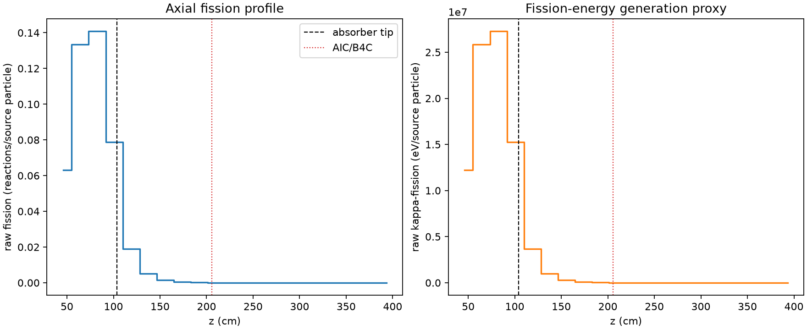
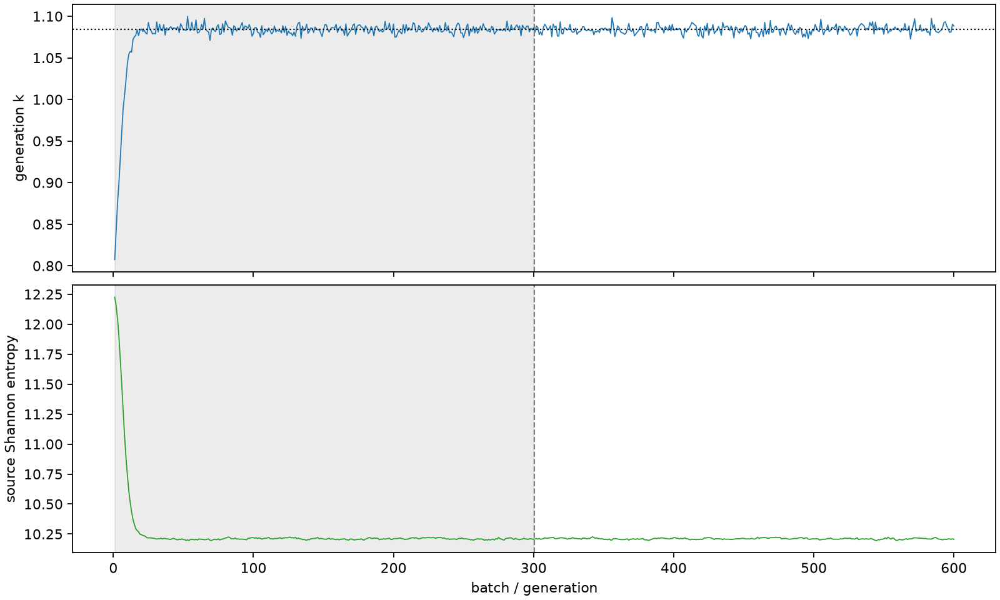

| field | value |
|---|---|
| experiment | V2-STAGE_256_OGRENCI_01-0021 |
| k | 1.0839666387610438 |
| MC standard error | 0.00017749523244612488 |
| seconds | 962.7962225009978 |
| acceptance | not_assessed |
| convergence | review_required |
Completed is output integrity only; physical and statistical review required. Zero tallies do not prove zero production or zero uncertainty.
| diagnostic | value |
|---|---|
| geometric fuel voxels | 5280 |
| zero fission tally voxels | 1914 |
| low signal fuel voxels | 2908 |
| low signal fission share | 8.950974329715232e-05 |
| low signal kappa share | 8.955044287908519e-05 |
| important fission share | 0.9500279550936175 |
| previous filter included | 2372 |
| duration estimate s | 1562.5173488400023 |
| actual minus estimate s | -599.7211263390045 |
| fission relative MC error | statistics |
|---|---|
| all_geometric_fuel | {"voxels": 5280, "positive_mean_voxels": 3366, "zero_mean_voxels": 1914, "undefined_relative_error_voxels": 1914, "median": 0.04111759913881267, "p95": 0.9295550618204904, "maximum": 1.0000000000000002} |
| low_signal | {"voxels": 2908, "positive_mean_voxels": 994, "zero_mean_voxels": 1914, "undefined_relative_error_voxels": 1914, "median": 0.5458517038098487, "p95": 1.0, "maximum": 1.0000000000000002} |
| important_95pct | {"voxels": 1102, "positive_mean_voxels": 1102, "zero_mean_voxels": 0, "undefined_relative_error_voxels": 0, "median": 0.005486155649358799, "p95": 0.007571224563825686, "maximum": 0.012711243211035388} |
| outside_previous_filter | {"voxels": 2908, "positive_mean_voxels": 994, "zero_mean_voxels": 1914, "undefined_relative_error_voxels": 1914, "median": 0.5458517038098487, "p95": 1.0, "maximum": 1.0000000000000002} |
| kappa_fission relative MC error | statistics |
|---|---|
| all_geometric_fuel | {"voxels": 5280, "positive_mean_voxels": 3366, "zero_mean_voxels": 1914, "undefined_relative_error_voxels": 1914, "median": 0.0410542026735778, "p95": 0.9302161032351072, "maximum": 1.0000000000000002} |
| low_signal | {"voxels": 2908, "positive_mean_voxels": 994, "zero_mean_voxels": 1914, "undefined_relative_error_voxels": 1914, "median": 0.5452037642492531, "p95": 1.0, "maximum": 1.0000000000000002} |
| important_95pct | {"voxels": 1102, "positive_mean_voxels": 1102, "zero_mean_voxels": 0, "undefined_relative_error_voxels": 0, "median": 0.005479010271890211, "p95": 0.007561024015601644, "maximum": 0.012694837979625825} |
| outside_previous_filter | {"voxels": 2908, "positive_mean_voxels": 994, "zero_mean_voxels": 1914, "undefined_relative_error_voxels": 1914, "median": 0.5452037642492531, "p95": 1.0, "maximum": 1.0000000000000002} |
| axial bin | fission share | kappa-fission share |
|---|---|---|
| 1 | 0.14246360084839255 | 0.1424651996124394 |
| 2 | 0.3018617130001451 | 0.301849218642599 |
| 3 | 0.31833197660467444 | 0.31831929381395185 |
| 4 | 0.17834768722211128 | 0.1783522422205489 |
| 5 | 0.04264471186970312 | 0.042658318499849225 |
| 6 | 0.01178655981054955 | 0.011790433395036867 |
| 7 | 0.0032903416933160517 | 0.003291440627216433 |
| 8 | 0.0009375515772275055 | 0.0009378660290210698 |
| 9 | 0.0002510549889337863 | 0.00025114485485335793 |
| 10 | 6.419781989568163e-05 | 6.422721159899765e-05 |
| 11 | 1.606688947929718e-05 | 1.6075281622665486e-05 |
| 12 | 3.7768711118554344e-06 | 3.7792410846812734e-06 |
| 13 | 6.421894327701378e-07 | 6.421149434436587e-07 |
| 14 | 1.1861502700771516e-07 | 1.184552341072369e-07 |
| 15 | 0.0 | 0.0 |
| 16 | 0.0 | 0.0 |
| 17 | 0.0 | 0.0 |
| 18 | 0.0 | 0.0 |
| 19 | 0.0 | 0.0 |
| 20 | 0.0 | 0.0 |
Histories include the inactive-to-active transition at batch 300. kappa-fission approximates fission energy production, not total heat deposition.

